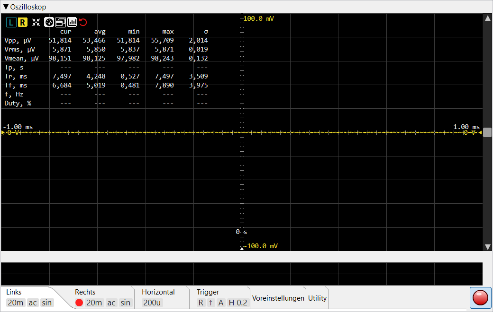

Diese Seite beschreibt die Bedienelemente des Oszilloskops. Für die interne Funktionsweise — Trigger, Sin x/x-Rekonstruktion zwischen Abtastwerten, Netzbrummen-Unterdrückung — siehe Funktionsprinzip ▸ Oszilloskop.
Zeitbereichsansicht des erfassten Signals in Echtzeit. Zwei unabhängige
Kanäle (L / R) teilen sich den Trigger; jeder Kanal besitzt eigene V/div-,
Kopplung-, Interpolations- und Vertikal-Offset-Einstellungen. Die
Erfassungsrate oben rechts (cap/s) zeigt, wie viele Frames
pro Sekunde die Ansicht rendert.

L / R
wählen, welcher Kanal die
Messtabelle und den verschiebbaren Kanal-Offset-Marker ansteuert —
sie wechseln nicht die Einstellungs-Tabs. Eine Schaltfläche
ist deaktiviert, wenn der zugehörige Kanal im
Linken / Rechten
Tab abgeschaltet ist. L / R und Auto-Setup
werden immer angezeigt; die übrigen erscheinen, sobald Messwerte
vorliegen (Kopfzeilen-Schaltflächen).0 s;
der zeitliche Offset in Sekunden wird über dem Griff angezeigt. Siehe
Trigger-Offset-Marker.Reihe quadratischer Schaltflächen oben links im Signalbereich des Oszilloskops. L / R und Auto-Setup werden immer angezeigt; die übrigen (Messanzeige, externes Fenster, Statistik-Umschalter, Zurücksetzen) erscheinen, sobald Messwerte berechnet wurden. Eine Maximieren-Schaltfläche ist hier nicht vorhanden.
Wählt, welcher Kanal die Messtabelle und den Kanal-Offset-Griff ansteuert — sie wechseln nicht die Einstellungs-Tabs. Der Schaltflächenhintergrund nimmt die Signalfarbe des Kanals an, wenn dieser ausgewählt ist; L und R sind unabhängig.
Die Verbindung zu den Tabs verläuft in die andere Richtung: eine Kopfzeilen-Schaltfläche ist deaktiviert, wenn der zugehörige Kanal im Linken / Rechten Tab (Kanal-Aktivierung) abgeschaltet ist, und wird wieder aktiviert, sobald der Kanal dort eingeschaltet wird.
Einmalige Anpassung: stellt die Zeitbasis so ein, dass ca. 1,5 Perioden auf dem Bildschirm sichtbar sind, und V/div so, dass das Signal ~75 % des vertikalen Bereichs ausfüllt. Verwendet die gemessene Periode und Vpp des aktuell ausgewählten Kanals.
Blendet die gesamte Messtabellen-Überlagerung ein und aus. Wenn ausgeblendet, sind nur noch das Signal und die L / R-Schaltflächen sichtbar.
Löst die Messtabelle in ein separates Werkzeugfenster aus, das neben der Hauptanwendung platziert werden kann. Nur sichtbar, wenn die Tabelle selbst sichtbar ist. Beim Schließen des Werkzeugfensters kehrt die Tabelle in die Hauptansicht zurück.
Blendet die avg / min / max / σ-Spalten der Messtabelle ein
bzw. aus. Der Worker berechnet sie unabhängig davon weiterhin; der
Umschalter betrifft nur die Darstellung.
Roter Gegenuhrzeigersinn-Pfeil-Knopf (das „Zum Anfang
zurückspulen"-Symbol). Löscht den gleitenden Statistikverlauf, der die
avg / min / max / σ-Spalten speist, sodass der nächste Frame
ein neues Mittelungsfenster beginnt. Nützlich nach einer Änderung der
Messbedingungen.
Kompaktes Raster oben links im Signalbereich. Acht Zeilen, bis zu fünf
Wertspalten (cur + die vier Statistikspalten).
| Zeile | Bedeutung |
|---|---|
| Vpp | Spitze-Spitze-Spannung (max − min über den sichtbaren Frame). |
| Vrms | Effektivspannung (Quadratischer Mittelwert) des Frames. |
| Vmean | DC-Mittelwert — nützlich zum Erkennen von Offsets. |
| Tp | Periodendauer (Sekunden), präzise berechnet als 1 / f aus der unten gemessenen Frequenz. |
| Tr | Anstiegszeit (10 % → 90 % von Vpp). |
| Tf | Abfallzeit (90 % → 10 %). |
| f | Frequenz des Trigger-Kanalsignals, mit Sub-Sample-Präzision gemessen; die Periodendauer Tp = 1 / f wird daraus abgeleitet. |
| Duty | Tastverhältnis in % der Periode — Einschaltdauer / Periode. |
Gleitende Statistik über ein konfigurierbares Mittelungsfenster (siehe Einstellungen → Oszilloskop → Messungsmittelung). σ ist die Grundgesamtheits-Standardabweichung. Das Fenster beträgt standardmäßig ~33 s bei 30 fps; der Zurücksetzen-Knopf löscht die Statistik.
Eine horizontale Markerlinie, deren Dreieck-Griff am rechten Rand liegt. Der Marker kann nur durch Ziehen dieses Griffs nach oben oder unten verschoben werden; Doppelklick auf den Griff bringt ihn in die vertikale Mitte zurück. Der aktuelle Trigger-Pegel (in Volt, für den aktiven Trigger-Kanal) wird neben dem Griff angezeigt. Ausgeblendet, wenn eine Datei geladen ist (ein statisches Signal hat keinen Trigger).
Eine vertikale Markerlinie, deren Dreieck-Griff am unteren Rand
liegt. Er bestimmt, wo im Fenster das Trigger-Ereignis sitzt. Nur durch
Ziehen des Griffs nach links / rechts verschiebbar;
Doppelklick bringt ihn in die Mitte (0 s). Der
zeitliche Offset in Sekunden wird über dem Griff angezeigt. Im
Datei-Modus ausgeblendet.
Jeder aktivierte Kanal besitzt einen eigenen Vertikal-Offset-Marker (gestrichelte Nulllinie + Dreieck-Griff), und beide Griffe befinden sich am LINKEN Rand. Die Offset-Spannung wird neben jedem Griff angezeigt. Nur der Marker des aktuell ausgewählten Kanals ist verschiebbar — der Griff des anderen Kanals ist ausgegraut und dient nur als Referenz. Den aktiven Marker durch Ziehen des Griffs verschieben; Doppelklick zentriert ihn.
Eine vertikale Scrollleiste rechts verschiebt das Signal nach oben oder unten (Spannungs-Offset, beide Kanäle gemeinsam). Eine horizontale Scrollleiste unten verschiebt die Ansicht links / rechts in der Zeit. Jede Scrollleiste verschiebt nur eine Achse — sie zoomt nicht — aber ihr Schieber wird von der Ansicht entsprechend der sichtbaren Fraktion skaliert, sodass er den Zoom nachverfolgt: Änderung von V/div oder t/div vergrößert oder verkleinert den Schieber entsprechend. Klick auf den leeren Bereich blättert in Richtung des Zeigers, oder den Knopf gedrückt halten, um weiter zu blättern, bis der Schieber den Cursor erreicht. Zoom mit dem Mausrad über dem Signalbereich.
Die horizontale Scrollleiste erscheint nur, wenn eine Audiodatei geladen ist — sie dient dazu, eine längere Aufnahme nach links / rechts zu verschieben. Während der Live-Erfassung gibt es nichts Früheres zum Zurückscrollen, daher bleibt sie ausgeblendet.
Die Einstellungs-Tab-Leiste am unteren Rand des Bereichs enthält kanalspezifische, Trigger- und Dienstprogramm-Einstellungen. Die Tabs Links, Rechts, Horizontal und Trigger zeigen eine Reihe von Kacheln unter dem Tab-Label mit den wichtigsten Werten, auch wenn der Tab-Inhalt eingeklappt ist; die Tabs Voreinstellungen / Dienstprogramme / Speichern / Laden haben keine Kacheln.
Bedienelemente für den linken Kanal. Enthält den Kanal-Umschalter, V/div-Selektor, AC/DC-Schaltfläche und Sin/Lin-Kontrollkästchen. Gleicher Aufbau wie der Tab Rechts.
Quadratischer Umschalter zum Aktivieren / Deaktivieren des Kanals. Wenn deaktiviert, wird das Signal nicht gezeichnet und der Kanal kann nicht als Trigger-Quelle gewählt werden.
Vertikale Auflösung als 1-2-5-10-Liste von 1 µV/div bis
500 V/div. Rad / Pfeiltasten / ↑↓-Tasten schrittweise durch die
Liste; alternativ beliebigen Wert eingeben (mit Suffix
µV / mV / V) für eine Einstellung
außerhalb der Liste. Unabhängig pro Kanal.
Im AC-Modus wird der laufende DC-Mittelwert vom dargestellten Signal subtrahiert, sodass eine kleine AC-Komponente auf einem großen DC-Offset sichtbar wird. Die zugrunde liegenden Messungen werden weiterhin an den Rohabtastwerten berechnet — nur das dargestellte Signal wird verschoben.
Kanalspezifisches Kontrollkästchen mit einem kleinen Sinc-Formbild. Wenn aktiviert, wird das Signal mit Lanczos-Sinc-Interpolation gerendert (korrekte bandbegrenzte Rekonstruktion); wenn deaktiviert, geradlinige Interpolation zwischen Abtastwerten. Einen sichtbaren Unterschied gibt es nur, wenn benachbarte Abtastpunkte auf dem Bildschirm mindestens ~2 px auseinander liegen (d. h. auf der Zeitachse hineingezoomt); bei geringerem Abstand sehen beide identisch aus, und Sinc kostet nur mehr CPU.

Identischer Aufbau wie der Tab „Links" — Kanal-Umschalter, V/div, AC/DC und Sin/Lin, jedoch für den rechten Kanal.

Horizontale Auflösung als 1-2-5-10-Liste von 1 µs/div bis
1 s/div (kein ns/div). Rad / Pfeiltasten / ↑↓-Tasten schrittweise
durch die Liste; alternativ beliebigen Wert eingeben
(µs / ms / s) für eine Einstellung
außerhalb der Liste. Der Signalmittelpunkt bleibt bei einer t/div-Änderung
fest — nur die Breite des sichtbaren Fensters ändert sich.

Paar von L / R-Umschaltern zur Auswahl, welcher Kanal den Trigger-Komparator ansteuert.
↑ / ↓-Paar. Steigende Flanke löst aus, wenn das Signal den Trigger-Pegel nach oben überschreitet; fallende Flanke für die Abwärtsrichtung.
A / N / S — Auto, Normal, Single.
Nur aktiv, wenn der Modus Single ist. Betätigung schaltet die nächste Einzelschuss-Erfassung scharf.
Kontrollkästchen + Schrittselektor in Divisions-Einheiten (0,0 .. 5,0 in
0,1-Schritten). Schmitt-Trigger-Hysterese: ein steigender Trigger löst
nur aus, wenn das Signal zuerst unter (Pegel − Hyst) gefallen
ist und dann (Pegel + Hyst) nach oben überschritten hat.
Dies stabilisiert den Trigger bei schwachen oder verrauschten Signalen
— ohne Hysterese verursacht Rauschen um den Pegel eine Vielzahl von
Fehlauslösungen und ein zitterndes Signal. Der Selektor ist ausgegraut,
wenn das Kontrollkästchen deaktiviert ist; der Wert bleibt beim
Umschalten erhalten.
Kontrollkästchen, nur aktiv, wenn der Generator auf Zwei Töne eingestellt ist (für jede andere Wellenform ausgegraut). Wenn aktiviert, überlagert das Oszilloskop die abgedimmte |f₁−f₂|-Schwebungshüllkurve der beiden Töne über das Live-Signal, in der Farbe des Trigger-Kanals — so kann die langsame Schwebung, die die beiden nah beieinander liegenden Töne erzeugen, sichtbar gemacht und der Trigger darauf stabilisiert werden.

Vollständige Oszilloskop-Konfigurationen speichern und abrufen. Im Namensfeld einen Namen für die aktuelle Konfiguration eingeben und Speichern drücken — alle kanal- und trigger-spezifischen Einstellungen werden gespeichert (V/div, AC/DC, Sin/Lin, t/div, Trigger-Kanal / Flanke / Modus, Hysterese-Aktivierung + Wert). Zum Wiederherstellen einen zuvor gespeicherten Namen mit dem Pfeil rechts neben dem Feld auswählen und Laden drücken. Löschen entfernt die ausgewählte Voreinstellung (nach einer Bestätigung).

Rendert den Oszilloskop-Bereich als PNG in einer wählbaren Auflösung und ermöglicht das Speichern auf Disk (oder Kopieren). Das Rendering verwendet eine Offscreen-Kopie des Bereichs mit eingeklappten Einstellungs-Tabs (sodass das Signal dominiert) und in der gewählten Größe — unabhängig vom sichtbaren Fenster.
Öffnet den Kalibrierungsdialog, der die Vollaussteuerungsspannung des ADC aus einem bekannten Referenzsignal (einem Kalibrator oder einem Präzisionsgenerator) ableitet und in den Einstellungen speichert. Deaktiviert, bis eine Erfassung läuft.

Schreibt die zuletzt erfassten Daten in eine Audiodatei. Das Dauerfeld (eine einzelne Eingabe in Sekunden) legt fest, wie viel gespeichert wird; die Dateiöffnen-Schaltfläche wählt das Ziel; die Speichern-Schaltfläche schreibt die Datei.

Spielt eine Audiodatei als Datenquelle des Oszilloskops ab, anstelle des
Live-ADC. Die Audio-öffnen-Schaltfläche wählt die Datei — jede
WAV / AIFF / FLAC-Datei, nicht nur
von diesem Oszilloskop gespeicherte. Dies ist ein einfacher Wellenformbe-
trachter für die Datei: kein Triggern oder Messen ist für ein
geladenes Signal verfügbar, und der FFT-Analysator läuft nicht über
das oszilloskopseitig geladene Audio.
Die Tabs Links, Rechts, Horizontal und Trigger zeigen eine Reihe kleiner Kacheln unter dem Tab-Label mit den Schlüsselwerten des jeweiligen Tabs (die übrigen Tabs haben keine). Kacheln sind passiv und besitzen Tooltips, die den angezeigten Wert erläutern; sie bleiben sichtbar, auch wenn der Tab-Inhalt eingeklappt ist.
Eine LED-Kachel auf dem Tab Links / Rechts, die nur angezeigt wird, wenn der Kanal aktiviert ist (fehlt, wenn der Kanal deaktiviert ist).
Die vertikale Auflösung des Kanals in Kurzform (z. B. 1m,
500m, 1).
ac oder dc — die Kopplung des Kanals.
sin wenn Sinc-Interpolation aktiv ist, lin
wenn nicht.
Die horizontale Auflösung in Kurzform — z. B. 200u,
1m, 20m.
L oder R — welcher Kanal aktuell zum Scharf
schalten des Triggers verwendet wird.
↑ für steigende, ↓ für fallende Flanke.
A, N oder S — Auto, Normal, Single.
Wird nur angezeigt, wenn Hysterese aktiviert ist; die Zahl gibt das
Hysterese-Fenster in Divisions an (z. B. H 2.0).
Das Fehlen dieser Kachel bedeutet, dass die Hysterese deaktiviert ist.